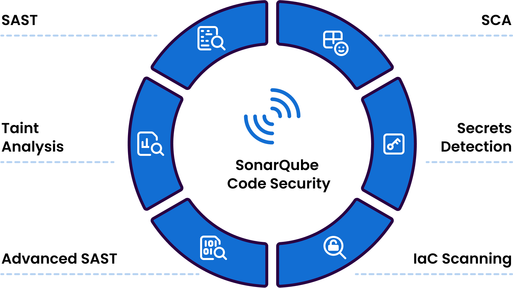

¿Qué seguridad ofrece SonarQube?
Las soluciones de SonarQube se integran en el flujo de trabajo de desarrollo de software, desde el IDE hasta la CI/CD. Con ellas,los desarrolladores aseguran la calidad y seguridad de código mediante un análisis SAST avanzado, SCA, escaneo de IaC y detección de secretos. También garantiza una cobertura completa para código propio, el generado por IA y el de terceros.

Características de seguridad de SonarQube
A continuación deglosamos las características clave de SonarQube que permiten mantener la seguridad del código, automatizar tareas, y entregar software seguro y fiable.
Las pruedas de seguridad de aplicaciones estáticas (SAST) detectan vulnerabilidades, puntos críticos de seguridad y otra series de problemas en las etapas más tempradas del ciclo de vida de desarrollo de software (SDLC).
El SAST Avanzado amplía las pruebas de seguridad a detectar vulnerabilidades y punto críticas en las interacciones de tu código con el código de terceros a partir de dependencias que el resto de soluciones no pueden detectar.
Realiza un seguimiento de entradas de usuarios no fiables con el análisis del flujo de datos en la base del código. Identifica inyecciones y vulnerabilidades de seguridad críticas.
El análisis de composición de software (SCA) escanea las dependencias de terceros y busca vulnerabilidades. De esta forma, se garantiza que los componentes open source de terceros no incluyan riesgos en tu código.
Gracias a la detección de secretos podrás evitar que la información confidencial, como claves API, accesos ilícitos a los datos u otros servicios privados se expongan en producción.
El análisis de infraestructura como código (IaC) detecta configruaciones incorrectas y problemas de seguridad en las definiciones de infraestructuras antes de que sea lanzado a producción.
Nuestras integraciones con SonarQube
Los plugins permiten ampliar funcionalidades o integrar otras herramientas con SonarQube

SonarQube Connector for Jira
Integración de Jira con SonarQube o SonarCloud. La calidad del código en un panel/gadget de Jira y la posibilidad de crear tareas en Jira a partir de los problemas detectados.

SonarQube Connector for Confluence
Integración de Confluence con SonarQube o SonarCloud. Añade información de la calidad de tu código en las páginas de tus espacios de proyecto.

SonarQube Connector for Bitbucket
Integración de Bitbucket con SonarQube o SonarCloud. toda la información en Bitbucket, para que los usuarios no tengan que cambiar su contexto.
¿Hablamos?
Si todavía no eres cliente y necesitas información sobre SonarQube puedes hacerlo a través del siguiente formulario.